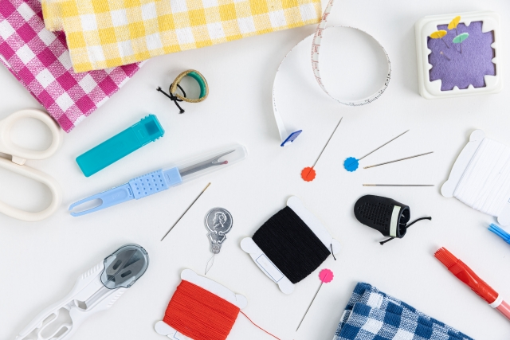
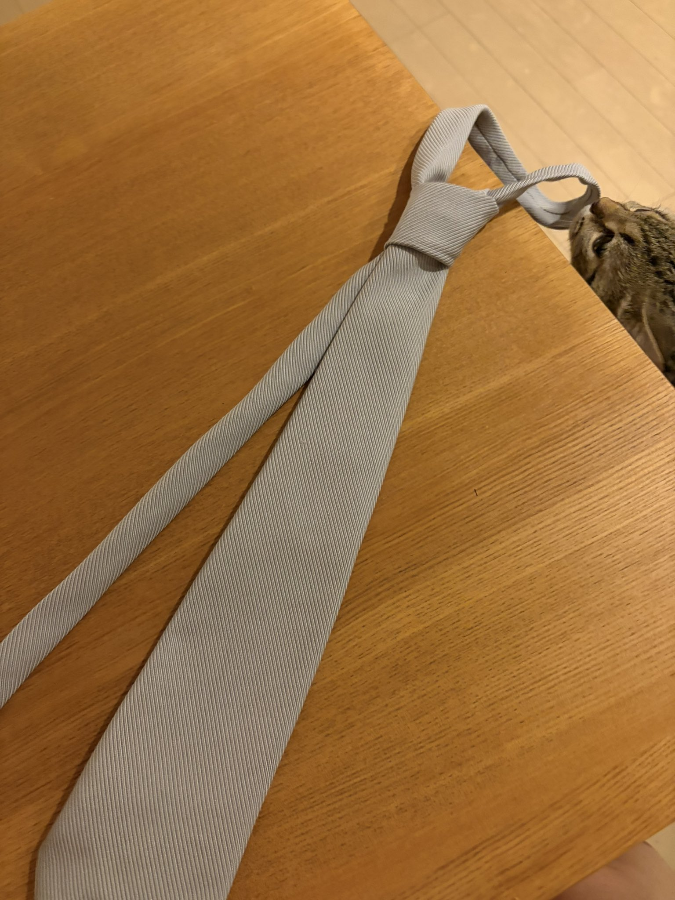

20251208初心者と熟練者が交錯する！はじめてのネクタイづくり（前編）

わたしは女性が着けるネクタイが大好きだ。わたしは女性にどんどんネクタイをつけてほしい。ネクタイは素晴らしい。美しさもさることながら、品があり、遊びが入れられる。素敵だ。 特にわたしが好きなのはDr.ハインリッヒという芸人のネクタイと、藤本タツキ『チェンソーマン』のネクタイだ。画像をここに添付しようと思ったのだが、良すぎる画像が多くて選べなかった。ぜひ調べてみてほしい。わたしは女性がネクタイをしている姿がとにかく好きだ。ネクタイの形も好きだ。ネクタイが大好きだ。 そして、自分でネクタイをするのも好きだ。中学の制服がネクタイだった。卒業してから着ける機会はなくなったが、あの時のネクタイが格好よくて気に入っていた。今見返すとただ野暮ったい制服だが、女子の制服がネクタイであるということは、クラスメイトもネクタイをしているということだ。ネクタイは素敵だ。 仕立ての面からも魅力的な点がいくつもある。ネクタイはほとんどが直線からできており、直線から成り立つものは比較的簡単なものが多い。経験をそれなりに積んできた今ならできるかもしれないと思った。そして、せっかくなら自分の好きな生地で仕立ててみたかった。 そして、作った。  結論から言うと、ネクタイを作るのは非常に簡単だった。が、他の洋裁とは違う点で難しく感じる部分がいくつかあった。簡潔に言うと、裁縫熟練者が書いているレシピの解き方と、裁縫初心者が書いているレシピの解き方とにぶつかった。 これからわたしは、このネクタイを作るまでに経た、裁縫熟練者と裁縫初心者のレシピを行ったり来たりしたはるかなる道のりを書いていく。もしネクタイを作りたくてこの文章を読んでいる人がいたら、わたしの道のりをそのままなぞるとおかしなことになるから、さっさと正解に進んでほしい。正解は「パタンナーの作った型紙を買うこと」である。わたしは女性がネクタイを着けているところをたくさん見たいのだ。 ◇ ◇ ◇ それでは、わたしが歩んだネクタイの道のりを書いていく…… わたしが楽しんだのは、まず、適切なネクタイの作り方を調べるところだ。ネクタイは非常に様々な形態があり、また歴史もある。スーツの一部分である、というだけで、その面倒くささが窺い知れる。突っ込んでいくと面倒なことになりそうなものだ。 結局のところ、近くにある裁縫用品店で型紙を買えばよい。しかし信頼できる型紙かどうかは買ってみなければ分からず、そもそもネクタイほど流通していて単純そうな形のものの型紙を買うのはいかがなものかと己の吝嗇なこころがささやいた。実際、無料で配布されている型紙も多かった。【蛇足】 型紙くらいジャンジャン買うぜ、という方に向け、ふたつ載せる。 ・ソレイアード https://tsucrea.biz/product.php?id=98 日本の型紙で、友人は実際にこれを愛用しているとのこと。 スタンダードで使いやすそうだ。そして安価だ（これをわたしは吝嗇った）。 ・MERCHANT&MILLS https://merchantandmills.com/rw/tie-pdf イギリスの型紙（だと思う）。わたしが大好きでよく見ている型紙ブランドだ！ 格好いい女の人たちがいっぱいネクタイをしていて素晴らしいのでぜひ見てほしい。 ぶっちゃけ、ネクタイを作り終わった今、これを買ってもよかったのではないかと思っている。今のレートだと1,200円くらいだ。そしてわたしは「無料配布のネクタイ型紙を探す」という大課題に取り掛かったのだ―――― まずはユザワヤ。ユザワヤは関東中心に店舗展開している手芸・生地・ホビー材料専門店で、無料の型紙やチュートリアルも多数公開している。わたしは手芸のことで困ったらまずユザワヤを見るくせがついている。 ユザワヤにはもちろんあった。→https://www.yuzawaya.co.jp/recipe/post_post-134.html ユザワヤのネクタイ型紙は、大・中・小とパーツに分かれ、裏地が2パーツついているようだ。そこからわたしは作り方を読む。 なんと、書いてある説明を読んでも全く意味が分からない。「縫い代をつける」……あらまあ。嫌だが、日本の型紙だと仕方がない（最近わたしは英語圏の型紙をよく探していて、あれらは縫い代込みにしてくれていることが多い。「縫い代をつける」のは、裁縫の前準備の段階の中でも特に面倒かつ意味のない工程に思えて、嫌いだ）。さらに読み進めていくと「プレシオン」とかいう意味の分からない単語が出てきた。（「プレシオン」は後々調べた。接着芯の商品名らしい） そして改めて図を見ると……【70%縮小図】！ この図を参考に自分で図を紙に引いて型紙を作れという意味だったと今なら分かるが、ネクタイ制作の初心者も初心者のわたしには大きなハードルだった。ユザワヤのレシピは時々こういう何段かすっ飛ばしたレベルのものが出てきて、あぶない。それはそうである。ユザワヤを昔から日常的に使っている人は熟達した技術を持っている人が多いはずで、そういう人のためにわざわざ縫い代込み・100%縮小の型紙を提供したりはしないのだ。 これは今のわたしには扱えないレベルのものだ…… そしてわたしはユザワヤを諦めた。 インターネットの海に漕ぎ出せば、様々な先達の研鑽の様子が見られる。これまでも様々なアイテムのレシピをインターネットの海で捕まえてきた。裁縫レシピは海の幸だ。 しかし、そこが難しく―― ここで前編・終とする。16歳くらいからこういう文章を書いているが、前編・後編のつくりにしたのは覚えている限りはじめてである。それほどに熱量と文量を割きたいテーマだ。ネクタイは素晴らしい。 後編へ続く！ ※ 追記 前後編のつもりで書いていたが、後編も熱が高まりすぎて文量がすごくなったため、前・中・後編の３部作に変更した。 というわけで、 後編…… 否、中編へ続く！ こういう文章を集めた本『Knitting＆Sewing』を制作中です。応援よろしくお願いします。
×